工作区信任
Visual Studio Code 非常重视安全性，并希望帮助你安全地浏览和编辑代码，无论其来源或原作者是谁。工作区信任功能让你可以决定项目文件夹中的代码是否可以在未经你明确批准的情况下由 VS Code 和扩展执行。
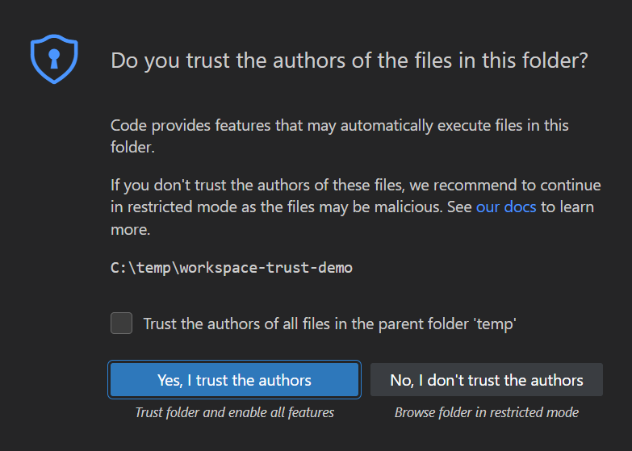
>注意：如有疑问，请将文件夹保持在受限模式。你可以稍后随时启用信任。
安全代码浏览
公共仓库和文件共享上有大量源代码可用，这非常棒。无论是什么编码任务或问题，很可能已经有一个好的解决方案存在某个地方。同样，有许多强大的编码工具可以帮助你理解、调试和优化代码，这也非常好。但是，使用开源代码和工具确实存在风险，你可能会暴露于恶意代码执行和漏洞利用之下。
工作区信任在处理不熟悉的代码时提供了额外的安全层，当工作区以"受限模式"打开时，它会阻止工作区中任何代码的自动执行。
[!IMPORTANT]
工作区信任在 VS Code 窗口和 Agents 窗口之间是共享的。如果工作区在 VS Code 中不受信任，那么在 Agents 窗口中也不受信任，代理程序在两个位置都不会运行。你可以从任一界面管理工作区信任，信任状态在两者之间是共享的。
受限模式
当工作区信任对话框弹出时，如果你选择否，我不信任作者，VS Code 会进入受限模式以防止代码执行。
工作台顶部会显示一个横幅，其中包含通过工作区信任编辑器管理文件夹的链接。在状态栏中，你还可以看到一个表示工作区处于受限模式的徽章。
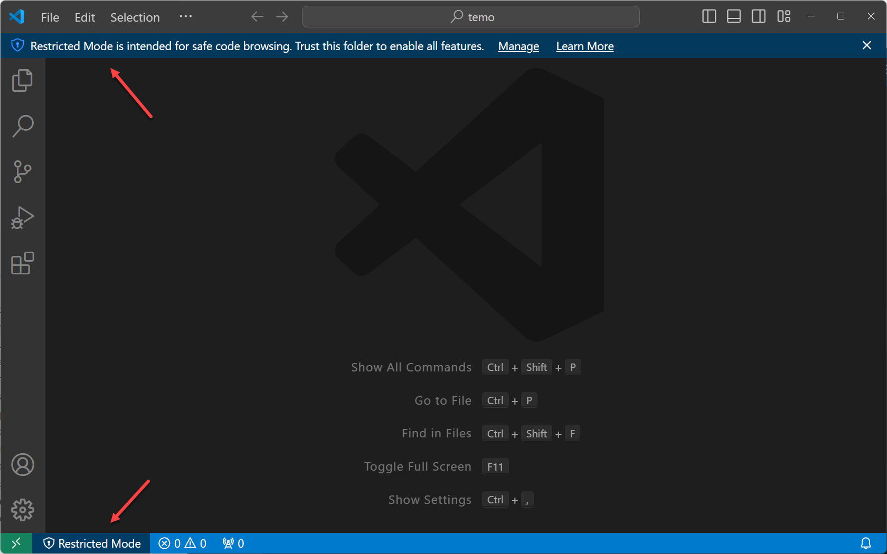
受限模式通过禁用或限制多个 VS Code 功能的运行来尝试防止自动代码执行：AI 代理程序、终端、任务、调试、工作区设置和扩展。
要查看受限模式下禁用的功能的完整列表，你可以通过横幅中的管理链接或选择状态栏中的受限模式徽章来打开工作区信任编辑器。工作区信任编辑器默认以模态浮层的形式在编辑器区域上方打开。
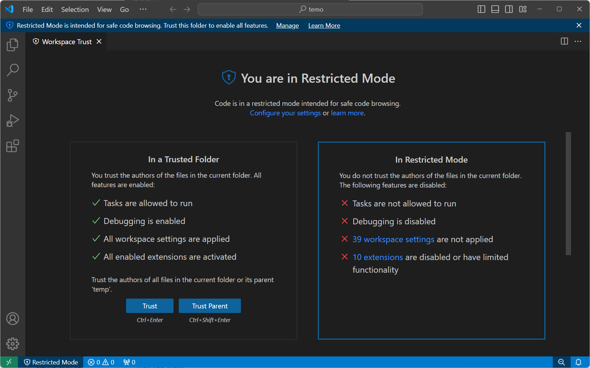
[!CAUTION]
工作区信任无法阻止恶意扩展执行代码并忽略受限模式。你只应安装和运行来自你信任的知名发布者的扩展。
AI 代理程序
当你在 VS Code 中使用 AI 驱动的开发功能（如代理程序）时，这些代理程序会代表你执行操作，包括更改你的代码库、运行终端命令或发起 Web 请求。使用代理程序时，任何文件都可能被拉入上下文中，理论上可能导致提示注入攻击。
在审查项目是否存在恶意内容之前，请依赖工作区信任边界并在受限模式下打开它。在受限模式下打开工作区会禁用该工作区中的代理程序。
详细了解在 VS Code 中使用 AI 驱动的开发功能时的 AI 安全注意事项。
终端
Shell 可能会根据工作区内容自动执行代码，例如通过引用 .env 文件或运行引用当前目录的 shell 初始化脚本来执行此操作。为了防止这种情况，当文件夹以受限模式打开时，默认会阻止打开终端。
如果你在受限模式下尝试打开终端，VS Code 会显示一个提示，要求确认你信任该文件夹。如果你取消该对话框，VS Code 将保持在受限模式，并且不会打开终端。
如果你将 shell 配置为阻止基于工作区内容的自动代码执行，则可以启用 setting(terminal.integrated.allowInUntrustedWorkspace) 设置，以允许在受限模式下打开终端而无需信任提示。
任务
VS Code 任务可以运行脚本和工具二进制文件。由于任务定义定义在工作区的 .vscode 文件夹中，它们是仓库提交源代码的一部分，并共享给该仓库的每个用户。如果有人创建了一个恶意任务，任何克隆该仓库的人都可能在不经意间运行它。
如果你在受限模式下尝试运行甚至列举任务（任务 > 运行任务），VS Code 会显示一个提示，要求确认你信任该文件夹，然后才能继续执行任务。如果取消该对话框，VS Code 将保持在受限模式。
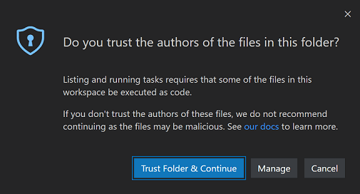
调试
与运行 VS Code 任务类似，调试扩展在启动调试会话时可以运行调试器二进制文件。因此，当文件夹以受限模式打开时，调试也会被禁用。
如果你在受限模式下尝试启动调试会话（调试 > 开始调试），VS Code 会显示一个提示，要求确认你信任该文件夹，然后才能继续启动调试器。如果你取消该对话框，VS Code 将保持在受限模式，并且不会启动调试会话。
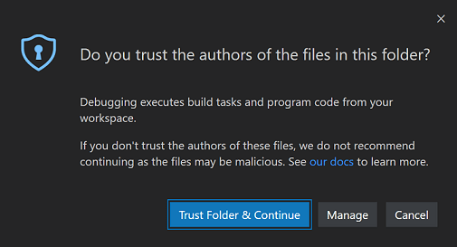
工作区设置
工作区设置存储在工作区根目录下的 .vscode 文件夹中，因此会被克隆该工作区仓库的所有人共享。某些设置包含可执行文件的路径（例如 linter 二进制文件），如果指向恶意代码，可能会造成损害。因此，VS Code 在受限模式下会禁用它，而不是应用这些工作区设置。
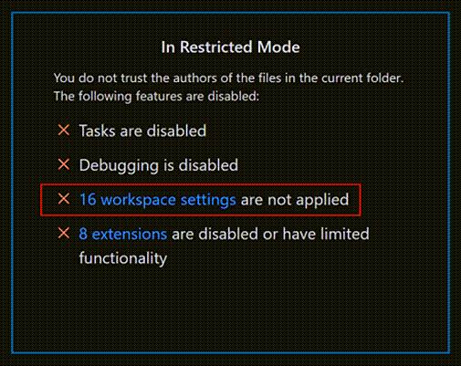
在工作区信任编辑器中，选择未被应用的工作区设置的链接，即可打开按 @tag:requireTrustedWorkspace 标签筛选的设置编辑器。
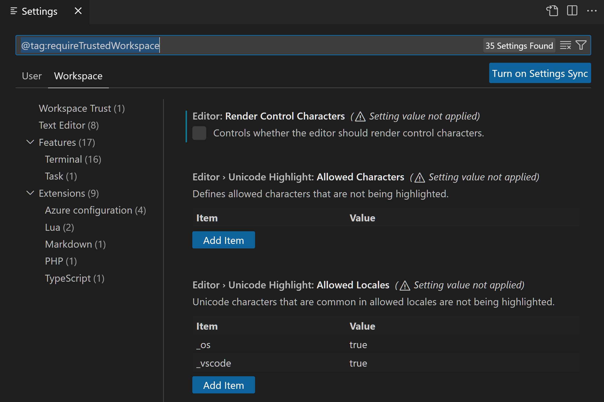
扩展
VS Code 扩展生态系统异常丰富和多样。人们创建了扩展来帮助完成几乎任何编程任务或编辑器自定义。有些扩展提供完整的编程语言支持（IntelliSense、调试、代码分析），而其他扩展则让你播放音乐或拥有虚拟宠物。
大多数扩展会代表你运行代码，并可能造成伤害。有些扩展的设置如果被配置为运行意外的可执行文件，可能会导致它们恶意操作。因此，在受限模式下，未明确选择加入工作区信任的扩展默认会被禁用。
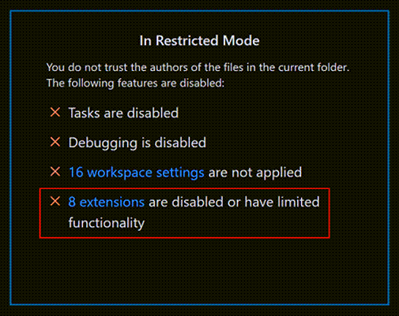
你可以通过选择工作区信任编辑器中的扩展已禁用或功能受限链接来查看已安装扩展的状态，该链接会显示按 @workspaceUnsupported 筛选器筛选的扩展视图。
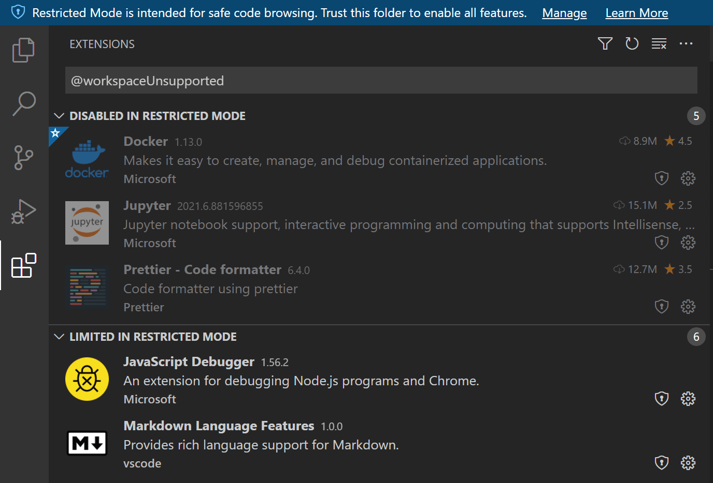
未选择加入工作区信任的扩展在受限模式下可以被禁用或受限。
在受限模式下已禁用
未明确表明支持在受限模式下运行的扩展会显示在在受限模式下已禁用部分。如果扩展作者确定他们的扩展可能因工作区中的修改（设置或文件）而被滥用，他们也可以表示永远不想在受限模式下启用。
在受限模式下受限
扩展作者还可以评估他们的扩展是否存在可能的安全漏洞，并声明他们在受限模式下运行时有受限支持。此模式意味着扩展可能会禁用某些功能或特性，以防止可能的漏洞利用。
扩展可以在扩展视图中的工作区信任徽章中添加自定义文本，说明在不受信任的文件夹中运行时的限制。例如，VS Code 内置的 PHP 扩展将 setting(php.validate.executablePath) 设置的使用限制为受信任的文件夹，因为覆盖此设置可能会运行恶意程序。
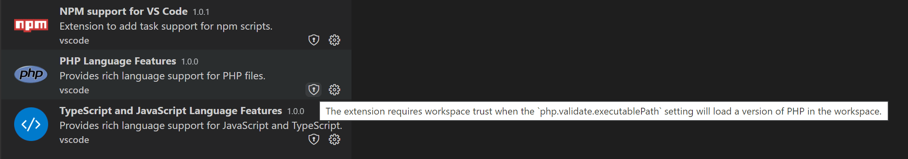
你可以使用 setting(extensions.supportUntrustedWorkspaces) 设置来覆盖扩展的工作区信任支持级别，如下面的启用扩展部分所述。
如果你在受限模式下尝试安装扩展，系统会提示你信任工作区或仅安装扩展。如果扩展不支持工作区信任，它会被安装但处于禁用状态或以受限功能运行。
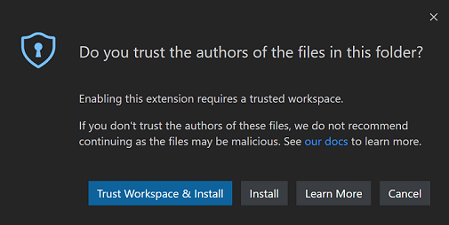
[!NOTE]
扩展作者可以通过阅读工作区信任扩展指南来了解如何更新他们的扩展以支持工作区信任。
信任工作区
如果你信任一个项目的作者和维护者，你可以在本地计算机上信任该项目的文件夹。例如，信任来自知名 GitHub 组织（如 github.com/microsoft 或 github.com/docker）的仓库通常是安全的。
当你打开一个新文件夹时，初始的工作区信任提示允许你信任该文件夹及其子文件夹。
你也可以打开工作区编辑器，通过选择信任或信任父文件夹按钮来快速切换文件夹的信任状态。
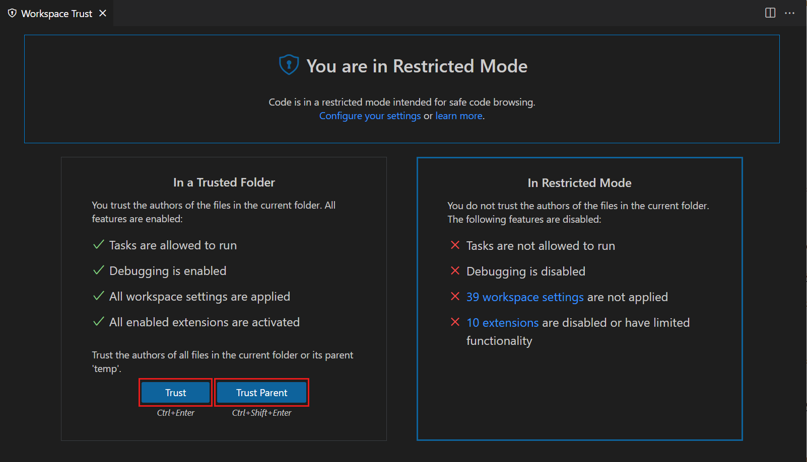
有几种方法可以打开工作区信任编辑器对话框。
在受限模式下：
- 受限模式横幅中的管理链接
- 受限模式状态栏项
你也可以随时使用：
- 命令面板中的工作区：管理工作区信任命令 (
kb(workbench.action.showCommands))[!IMPORTANT]
工作区信任在 VS Code 窗口和 Agents 窗口之间是共享的。如果工作区在 VS Code 中不受信任，那么在 Agents 窗口中也不受信任，代理程序在两个位置都不会运行。你可以从任一界面管理工作区信任，信任状态在两者之间是共享的。
选择文件夹
当你信任一个文件夹时，它会被添加到工作区信任编辑器中显示的受信任的文件夹和工作区列表中。
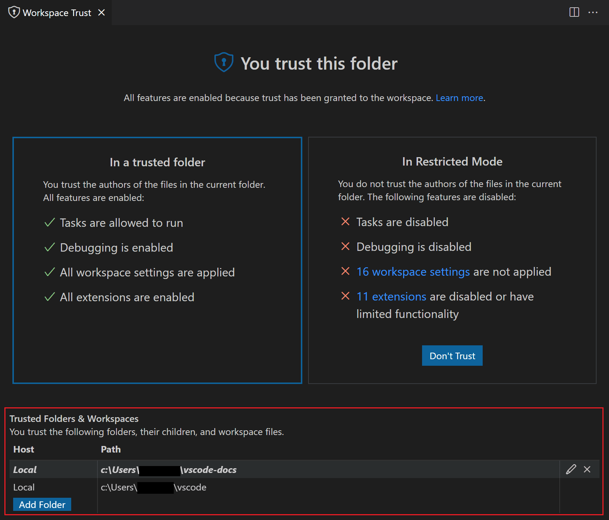
你可以手动添加、编辑和从此列表中删除文件夹，以启用或禁用工作区信任。活动文件夹在此列表中以粗体高亮显示。
选择父文件夹
当你通过工作区信任编辑器信任一个文件夹时，你可以选择同时信任父文件夹。这会将信任应用于父文件夹及其所有子文件夹。
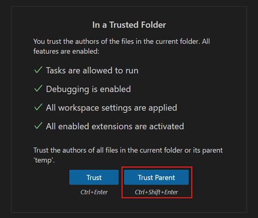
如果你在一个文件夹下有许多包含受信任内容的文件夹，信任父文件夹会很有帮助。
当你在受信任的父文件夹下打开一个子文件夹时，你不会看到通常的不信任按钮让你回到受限模式。相反，会有文字说明你的文件夹由于另一个文件夹而被信任。
你可以从受信任的文件夹和工作区列表中添加、修改和删除父文件夹条目。
文件夹配置
当你信任一个父文件夹时，所有子文件夹都会被信任，这使你可以通过仓库在磁盘上的位置来控制工作区信任。
例如，你可以将所有受信任的仓库放在一个"TrustedRepos"父文件夹下，将不熟悉的仓库放在另一个父文件夹下，如"ForEvaluation"。你可以信任"TrustedRepos"文件夹，并选择性地信任"ForEvaluation"下的文件夹。
├── TrustedRepos - 将受信任的仓库克隆到此父文件夹下
└── ForEvaluation - 将实验性或不太熟悉的仓库克隆到此父文件夹下你还可以根据组织特定的父文件夹对你的仓库进行分组并设置信任。
├── github/microsoft - 将特定组织的仓库克隆到此父文件夹下
├── github/{myforks} - 将你 fork 的仓库放在此父文件夹下
└── local - 本地未发布的仓库启用扩展
如果你想使用受限模式，但你喜欢的扩展不支持工作区信任，会发生什么？这种情况可能发生在某个扩展虽然有用且功能正常，但没有得到积极维护，也没有声明其工作区信任支持。为了处理这种情况，你可以使用 setting(extensions.supportUntrustedWorkspaces) 设置来覆盖扩展的信任状态。
[!IMPORTANT]
覆盖扩展的工作区信任支持时请小心。扩展作者可能有充分的理由在受限模式下禁用他们的扩展。如有疑问，请联系扩展作者或查看最近的更新日志以获取更多上下文。
在设置编辑器 (kb(workbench.action.openSettings)) 中，你可以通过扩展：支持不受信任的工作区设置 (setting(extensions.supportUntrustedWorkspaces)) 为各个扩展覆盖工作区信任。
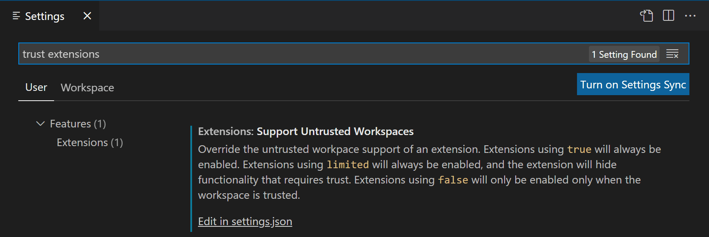
选择在 settings.json 中编辑链接来管理扩展 ID 列表及其支持状态和版本。你可以通过 IntelliSense 建议选择任何已安装的扩展。
下面是 Prettier 扩展的 settings.json 条目示例。
"extensions.supportUntrustedWorkspaces": {
"esbenp.prettier-vscode": {
"supported": true,
"version": "6.4.0"
},
},你可以使用 supported 属性来启用或禁用工作区信任支持。version 属性指定了适用的确切扩展版本，如果你想为所有版本设置状态，可以移除 version 字段。
如果你想了解更多关于扩展作者如何评估和确定在受限模式下限制哪些功能的信息，可以阅读工作区信任扩展指南。
打开不受信任的文件
如果你打开一个位于受信任文件夹之外的文件，VS Code 会检测到该文件来自文件夹根目录之外的某个位置，并提示你选择继续打开该文件或在受限模式下的新窗口中打开该文件。以受限模式打开是最安全的选择，一旦你确定文件是可信的，可以随时在原始的 VS Code 窗口中重新打开该文件。
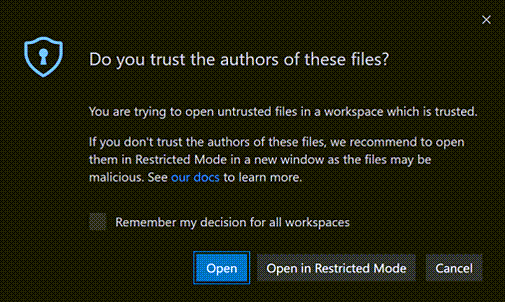
如果你希望从受信任工作区外部打开文件时不收到提示，可以将 setting(security.workspace.trust.untrustedFiles) 设置为 open。你还可以将 setting(security.workspace.trust.untrustedFiles) 设置为 newWindow，以始终在受限模式下创建新窗口。在不信任文件对话框中勾选记住我对所有工作区的决定选项，会将你的选择应用于 setting(security.workspace.trust.untrustedFiles) 用户设置。
打开不受信任的文件夹
当使用包含多个文件夹的多根工作区时，如果你尝试向受信任的多根工作区添加一个新文件夹，系统会提示你决定是否信任该文件夹中的文件，否则整个工作区将切换到受限模式。
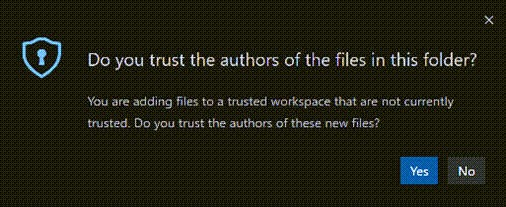
空窗口（未打开文件夹）
默认情况下，如果你打开一个新的 VS Code 窗口（实例）而未打开文件夹或工作区，VS Code 会以完全信任的方式运行该窗口。所有已安装的扩展都会被启用，你可以无限制地使用空窗口。
当你打开一个文件时，系统会提示你是否要打开不受信任的文件，因为没有文件夹作为其父级。
你可以通过使用工作区信任编辑器将空窗口切换到受限模式（在命令面板中选择工作区：管理工作区信任），然后选择不信任。空窗口在当前会话期间保持受限模式，但如果重新启动或创建新窗口，则会恢复到受信任状态。
如果你希望所有空窗口都处于受限模式，可以将 setting(security.workspace.trust.emptyWindow) 设置为 false。
设置
以下是可用的工作区信任设置：
setting(security.workspace.trust.enabled)- 启用工作区信任功能。默认值为 true。setting(security.workspace.trust.startupPrompt)- 是否在启动时显示工作区信任对话框。默认值是仅对每个不同的文件夹或工作区显示一次。setting(security.workspace.trust.emptyWindow)- 是否始终信任空窗口（未打开文件夹）。默认值为 true。setting(security.workspace.trust.untrustedFiles)- 控制如何处理工作区中的零散文件。默认值是提示。setting(extensions.supportUntrustedWorkspaces)- 覆盖扩展的工作区信任声明。值为 true 或 false。setting(security.workspace.trust.banner)- 控制何时显示受限模式横幅。默认值为untilDismissed。命令行开关
你可以通过传递 --disable-workspace-trust 在 VS Code 命令行中禁用工作区信任。此开关仅影响当前会话。
后续步骤
了解更多：
- 工作区信任扩展指南 - 了解扩展作者如何支持工作区信任。
- 什么是 VS Code"工作区"？ - 详细了解 VS Code"工作区"概念。
- GitHub 仓库扩展 - 直接在仓库上工作，无需将源代码克隆到本地计算机。
常见问题
我可以在受限模式下编辑源代码吗？
可以，你仍然可以在受限模式下浏览和编辑源代码。某些语言功能可能会被禁用，但文本编辑始终受支持。
我已安装的扩展去哪了？
在受限模式下，任何不支持工作区信任的扩展都会被禁用，所有 UI 元素（如活动栏图标和命令）都不会显示。
你可以使用 setting(extensions.supportUntrustedWorkspaces) 设置来覆盖扩展的工作区信任支持级别，但请谨慎操作。启用扩展部分提供了更多详细信息。
我可以禁用工作区信任功能吗？
可以，但不建议这样做。如果你不希望 VS Code 在打开新文件夹或仓库时检查工作区信任，可以将 setting(security.workspace.trust.enabled) 设置为 false。VS Code 随后将像 1.57 版本之前那样运行。
如何取消信任文件夹/工作区？
打开工作区信任编辑器（从命令面板中选择工作区：管理工作区信任），然后选择不信任按钮。你还可以从受信任的文件夹和工作区列表中删除该文件夹。
为什么我看不到"不信任"按钮？
如果你在工作区信任对话框中看不到不信任按钮，则该文件夹的信任级别可能是从父文件夹继承的。查看受信任的文件夹和工作区列表，检查是否有父文件夹启用了工作区信任。
某些工作流，如连接到 GitHub Codespace 或附加到正在运行的 Docker 容器，会自动受信任，因为这些是托管环境，你应该已经对其有较高的信任度。
工作区信任可以防止什么？
VS Code 的许多功能允许第三方工具和扩展自动运行，例如保存时进行 lint 或格式化，或者在你执行某些操作（如编译代码或调试）时运行。不道德的人可能会制作一个看似无害的项目，在不知情的情况下运行恶意代码并损害你的本地计算机。工作区信任通过在评估不熟悉源代码的安全性和完整性时尝试阻止代码执行，提供了额外的安全层。